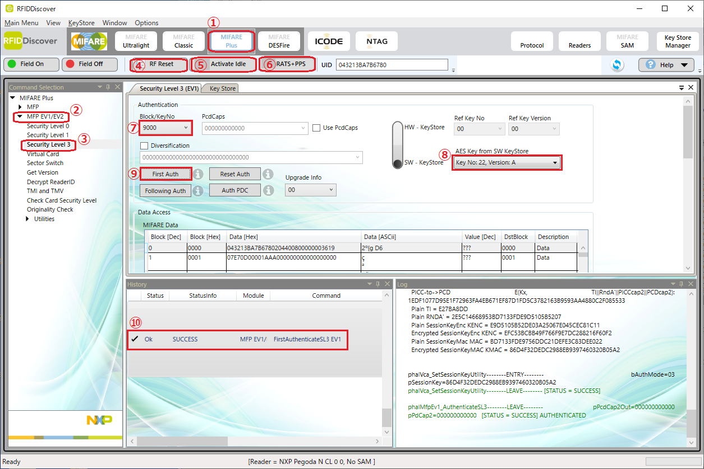
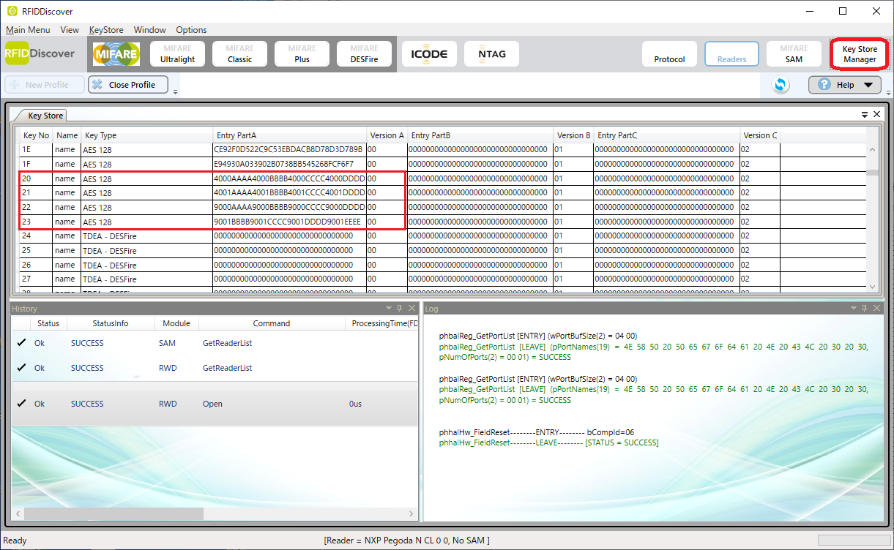
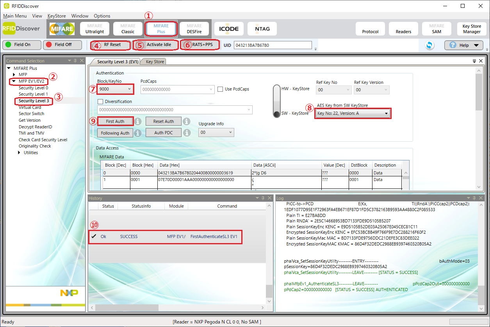
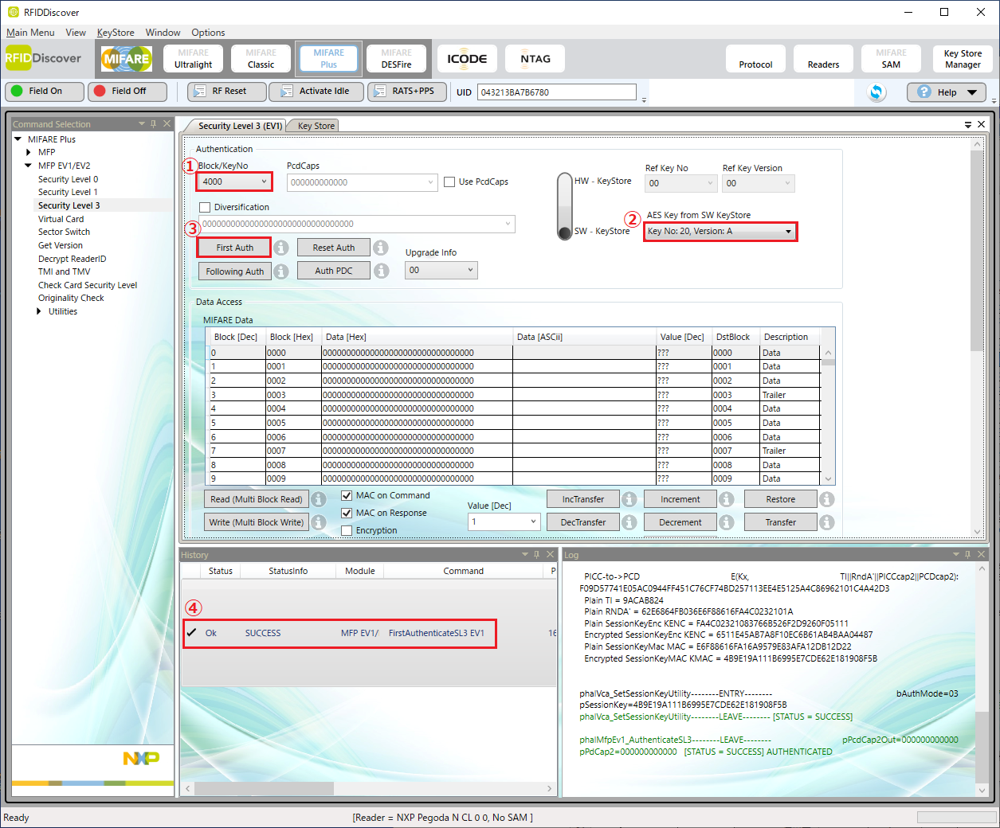
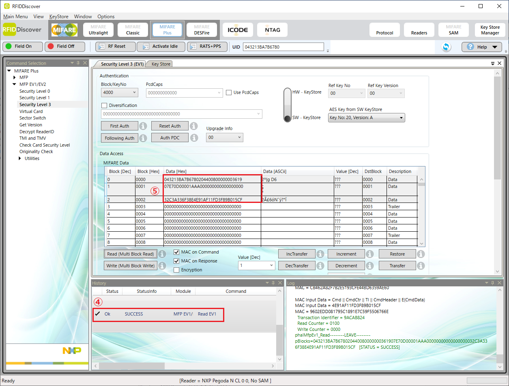
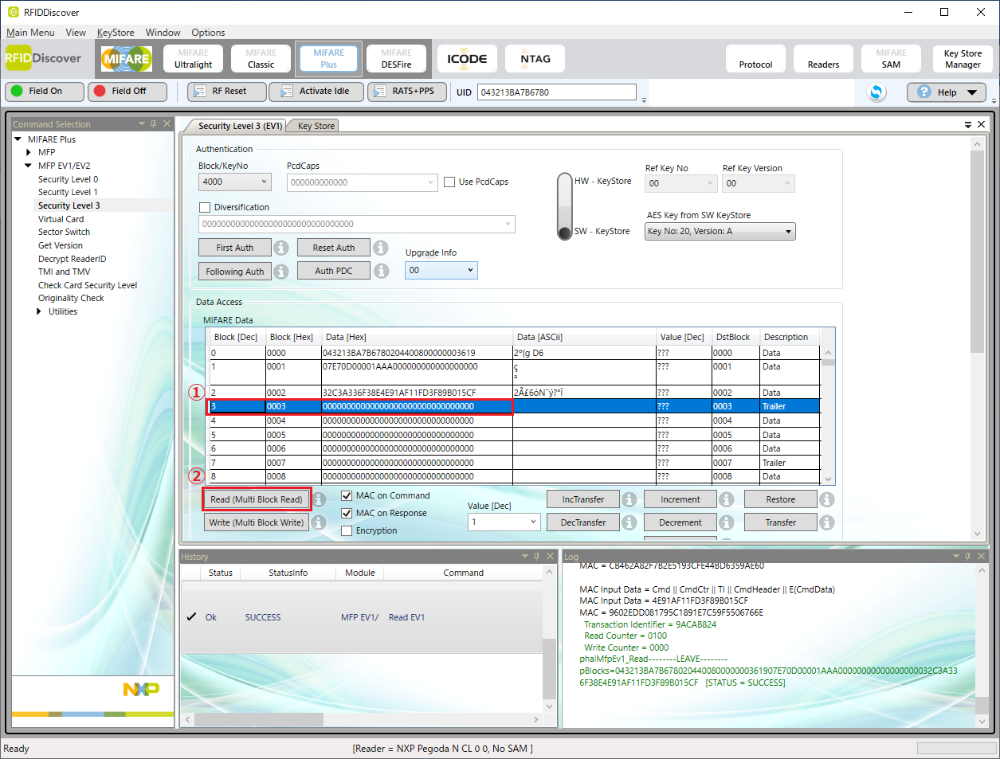

9000hの鍵  SeculityLevel3のメニューを開き、Block/KeyNoで9000を選択（⑦）、KeyStoreKeyで9000hの鍵を登録した番号を選択（⑧）、FirstAuthを実行（⑨）してSUCCESS（⑩）が表示されればOKです。
9001hの鍵

4000hの鍵

4001hの鍵

本資料ではグラモ様向けMIFARE Plusのエンコード確認方法の案を示します。
| ブロックNo. | 値 |
|---|---|
| 9000 | 9000AAAA9000BBBB9000CCCC9000DDDD |
| 9001 | 9001BBBB9001CCCC9001DDDD9001EEEE |
| 4000 | 4000AAAA4000BBBB4000CCCC4000DDDD |
| 4001 | 4001AAAA4001BBBB4001CCCC4001DDDD |
| ブロックNo. | 値 |
|---|---|
| 0001 | 07E70D00001AAA000000000000000000 |
| 0002 | 32C3A336F38E4E91AF11FD3F89B015CF |
| ブロックNo. | 値 |
|---|---|
| 0003 | 00000000000F0F0F0F00000000000000 |
RFID DiscoverのKEY Storeに今回の検査で使用する鍵を登録しておきます。

上の例ではKeyNo.20に4000ブロック、KeyNo.21に4001ブロック、KeyNo.22に9000ブロック、KeyNo.23に9001ブロックの鍵を各々登録しています。
4つの鍵がカードに正しく書き込まれていることを確認します。
9000hの鍵  SeculityLevel3のメニューを開き、Block/KeyNoで9000を選択（⑦）、KeyStoreKeyで9000hの鍵を登録した番号を選択（⑧）、FirstAuthを実行（⑨）してSUCCESS（⑩）が表示されればOKです。
9001hの鍵
4000hの鍵
4001hの鍵
 Block/KeyNoで4000を選択（①）、KeyStoreKeyで4000hの鍵を登録した番号を選択（②）、FirstAuthを実行します（③）。
 DataAccessでBlock0000/0001/0002を選択し（①）MAConCommandとMAConResponseのチェックが入っていることを確認、Readボタンを押します（③）。
DataAccessでBlock0000/0001/0002を選択し（①）MAConCommandとMAConResponseのチェックが入っていることを確認、Readボタンを押します（③）。
 SUCCESSが表示され（④）、ブロック0001とブロック0002の読み出しデータが期待している可変データと一致していればOKです（⑤）。
 DataAccessでBlock0003を選択し（①）Readボタンを押します（②）。
 SUCCESSが表示され（③）、ブロック0003の読み出しデータが2.2.3に示した固定データと一致していればOKです（④）。
SUCCESSが表示され（③）、ブロック0003の読み出しデータが2.2.3に示した固定データと一致していればOKです（④）。